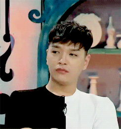
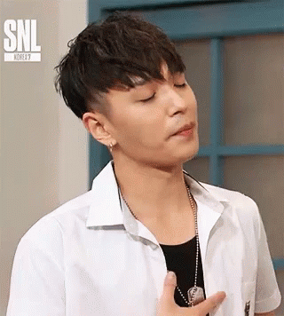
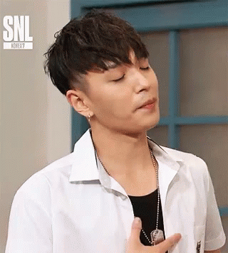
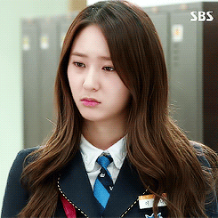
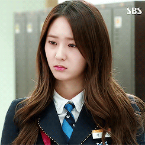

Hello milabs,
Happy 1st wedding anniversary! I love you, aah ano di ko na alam ano sasabihin ko kasi nasabi ko naman ata lahat, nag thank you na 'ko, may labyu pa,
nag sorry na din ako sa mga kabaliwan ko tapos ano napatawad na kita sa kahit ano pa man yung rason mo para magselos ahe. gusto ko lang mag effort ng
gift para sa anniversary natin kasi i failed to do it nung 2nd anniverasy natin. ahu gusto ko sana may gift din ako ibigay sayo kaso lang di ko talaga
alam ibibigay sayo ih. kish na lang kita ulit para mapawi pagod mo ngayon, kasi kung hug kita baka maipit lang kita lalo mukha ka pa namang squishy
pag nakikita kita. wag mo na iisipin na iiwan kita pag naging sweet ako sayo kasi ganon talaga 'yon aheheheh paano ba maging sweet na hindi mukhang
nang-iiwan.
pero ano dahil nasabi mo naman na may hangganan din naman lahat ng bagay, gusto ko alalahanin mo 'ko nung first time mo kong nakilala.
'wag mo na isipin kung ano ako nung natapos na, gusto ko maalala mo 'ko nung una mo kong nakilala kahit na hindi ako ganon kabait sayo,
ayaw ko lang kasi maging malungkot ka gusto ko maalala mo lang yung mga masasayang bagay. charot at dahil dyan wala charot lang talaga 'yon alam mo na
milabs yung last will & testament ko kahit di pa finale yon, syempre dadagdagan ko pa 'yon hehehe.
echos lang talaga second paragraph, but anyways yie kilig naman ako may 2nd anniversary na may 1st wedding anniversary pa XD
ayoko na tayo na talaga naka tiis sa isa't isa nyeam. thank you ulit kasi pinakasalan mo ako, thank you kasi binigyan mo ako ng tatlong
makukulit na baeby pati doggo. thank you kasi pinagbibigyan mo mga kabaliwan ko hehehe. sorry kasi hindi ako marunong maging sweet, pramis aaralin q po.
sorry kung hindi aq perfect minsan tapos di ko masyadong kinukwento pag di ako okay, ayoko lang kasi pati ikaw maging malungkot dahil sakin.
ayon, sorry na kung mabilis ako magselos inde ko macontrol minsan pero madalas chill naman aq. i can manage xD

 

 
